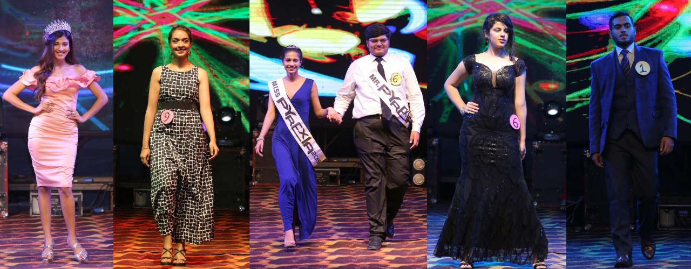

<div class="affashinato p-5 text-white bg-black">
    <div class="container ">
        <h2 class="fw-bold text-uppercase text-center">Chronos</h2>
        <h5 class="fw-bold mb-4 text-center">Beyond the seams- Our sensational
            quantum leap into the future</h5>
        
        <div class="box">
            <p>The event will be conducted in 2 rounds- the first will be Talent
                Round, a second round will be the Final Round</p>
            <p>The participants who will be selected for the final round will be
                promoted on the official Pyrexia social media handles.</p>
            <p>In the talent round, participants will be judged based on various
                criteria like-
                Personality
                Special talent ( to be expressed in 1 minute)
                Pov about a topic that will be given on the spot
                Stage presence
                It will be held on 10th Sept.</p>
            <p>The final round will be held on 11th September. In the final round
                participants will be judged based on the following criteria.</p>
    
                <h3><b>ROUND 1:</b> <br>
                    Ramp walk
                    Theme: 'Fantasies' </h3>
                <p>Step into the realm of elegance and allure at the 'Mr. and Ms. Pyrexia '! This event theme is a tantalizing fusion of flare and fantasy, where haute couture meets the world of dreams. Prepare to be enchanted as models glide down the runway in outfits inspired by whimsical creatures, mythical landscapes, and otherworldly aesthetics. Immerse yourself in the magic of  fantasies as we celebrate the art of individuality and the beauty of imagination.
                </p>
                <p>Judges will evaluate participants based on
                    Creativity, Stage presence, confidence and adherence to the theme.</p>
                <p>3 minutes will be provided to each participant (negative marking for
                    extra time).
                    All participants should carry their tracks and visuals in a pen
                    drive.
                </p>
                <br>
                <h3><b>ROUND 2:</b></h3>
                <p>Participants will be judged based on how well they perform the task that will be given on the spot.
                </p>
                <br>
                <h3><b>ROUND 3:</b>
                <br>Question/Answers</h3>
                <p>-Green rooms will be provided for changing purposes.</p>
                <p>The participants should make their arrangements for costumes and make-up.</p>
                <p>Vulgarity is strongly prohibited.</p>
                <p>Any form of obscenity will lead to debarring the participant from the contest.</p>
                <p>The decision of the judges will be final and binding.</p>
                <p>Age limit- 25 years.</p>  
                <h4>REGISTRATION FEE - 300 Rs for talent round 600 Rs for final round</h4>  
                <h5>Prizes:</h5>
                <p>All the participants will be provided with participation certificates.</p>
                <p>All the finalists will be provided with exciting prizes.</p>
                <p>Winners will be titled as Mr and Miss Pyrexia and prizes pool Rs. 20,000.</p>
        </div>
        <hr>
        <div class="box-2 ">
            <h3 class="text-center mt-3">Contact details- </h3>
            <div class="contact  d-flex flex-wrap justify-content-between">
                <p>Mahima Choudhary 7878516219</p>
                <p>Himanshi Garg 6377503309</p>
                <p>Aastha Prashar 7807152496</p>
            </div>
    
        </div>
    
    </div>
    
</div>
